- Confianza
- Seguridad
- Veracidad
- Transparencia
BUSCADOR
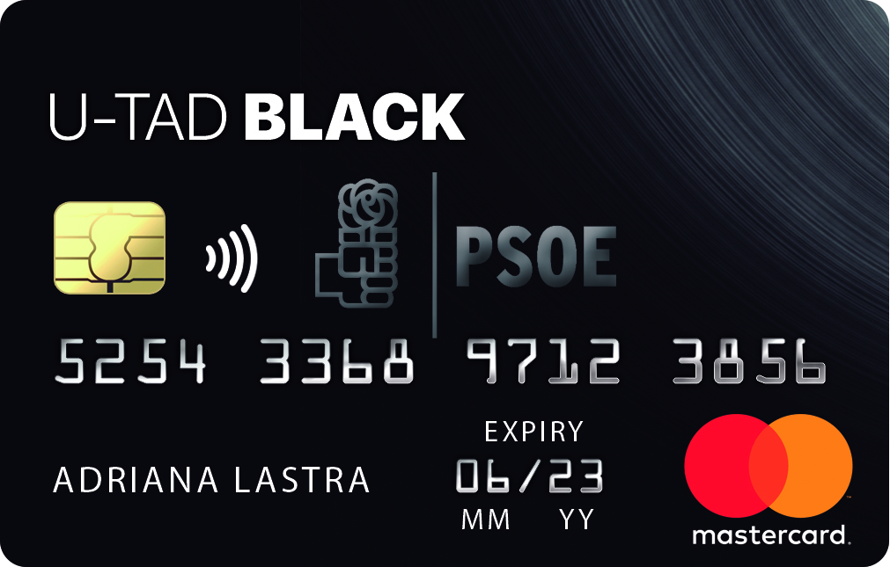
PSOE Card
El Partido Socialista Obrero Español es un partido político español que se sitúa en la centroizquierda del espectro político. Desde el 18 de junio de 2017 está dirigido por el secretario general Pedro Sánchez, proclamado durante la celebración del XXXIX Congreso del partido.
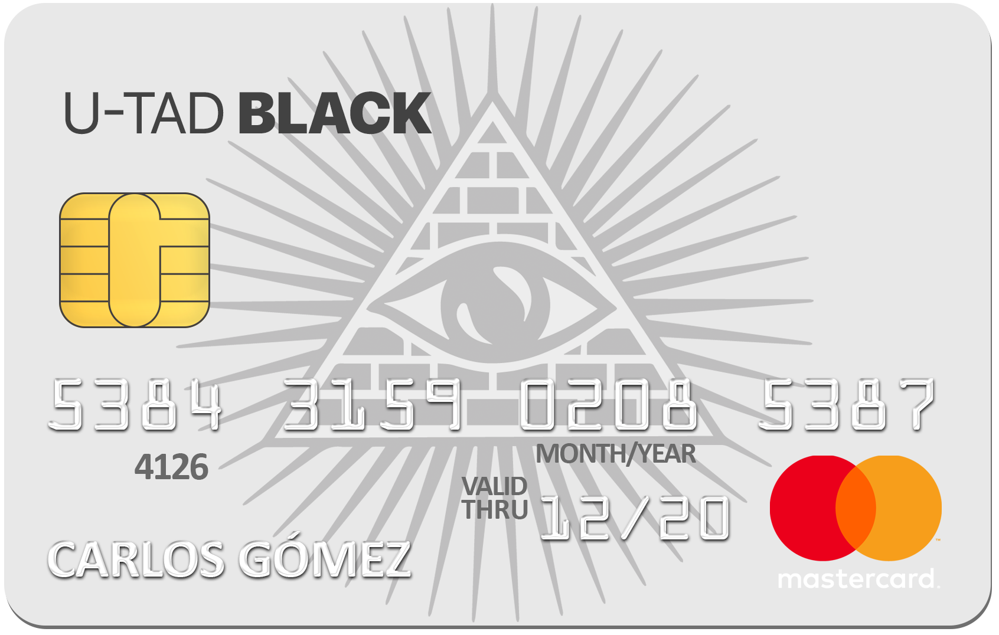
Illuminati Card
La Orden de los Iluminados es el nombre dado a varios grupos. Históricamente se refiere a la organización Illuminati de Baviera, una sociedad secreta de la época de la Ilustración, fundada el 1 de mayo de 1776, la cual manifestaba oponerse a la influencia religiosa y los abusos de poder del estado.
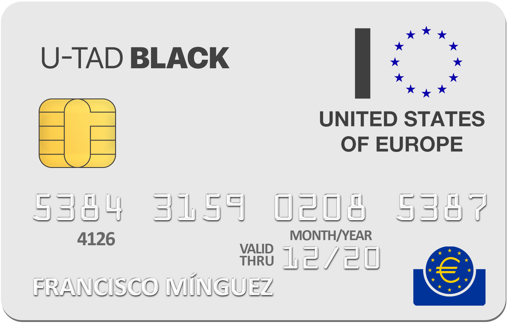
Banco Central Europeo Card
El Banco Central Europeo es el banco central de los países de la Unión Europea que tienen el euro como moneda. Conforma, junto con los bancos centrales de los demás estados de la UE ajenos a la eurozona, el Sistema Europeo de Bancos Centrales.
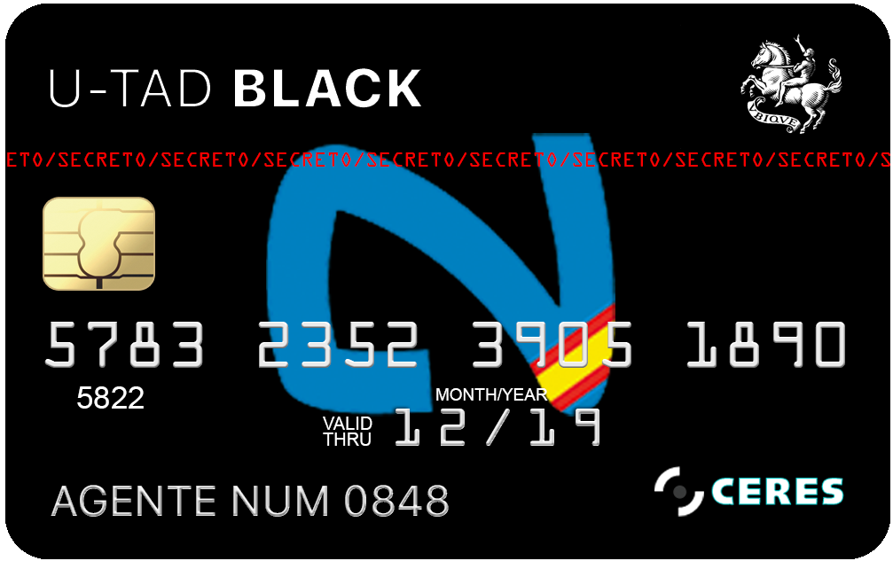
Cuerpo Nacional de Inteligencia Español Card
El Centro Nacional de Inteligencia es el servicio de inteligencia de España, creado en 2002 como sucesor del antiguo Centro Superior de Información de la Defensa.
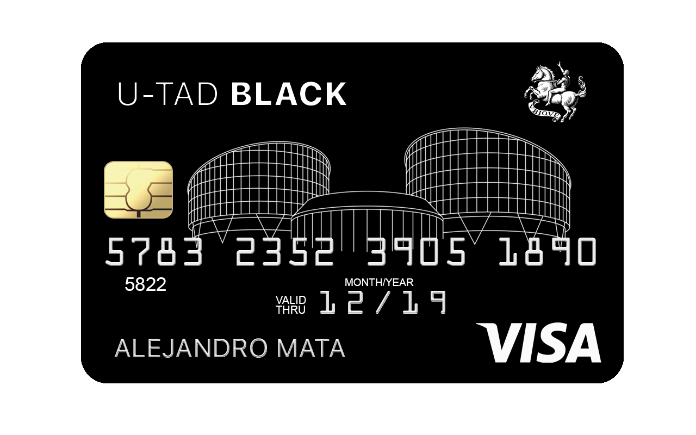
Tribunal de Justicia Europeo Card
El Tribunal de Justicia de las Comunidades Europeas, oficialmente solo el Tribunal de Justicia, es el tribunal supremo de la Unión Europea en materia de derecho de la Unión Europea.
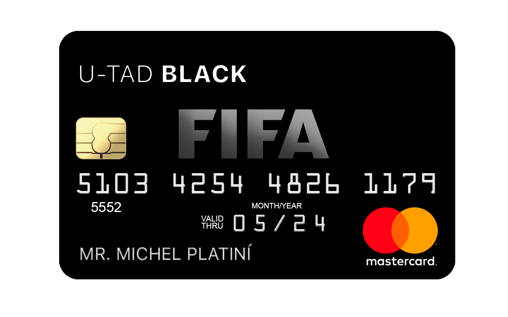
FIFA Card
La Fédération Internationale de Football Association, universalmente conocida por sus siglas FIFA, es la institución que gobierna las federaciones de fútbol en todo el planeta. Se fundó el 21 de mayo de 1904 y tiene su sede en Zúrich, Suiza.
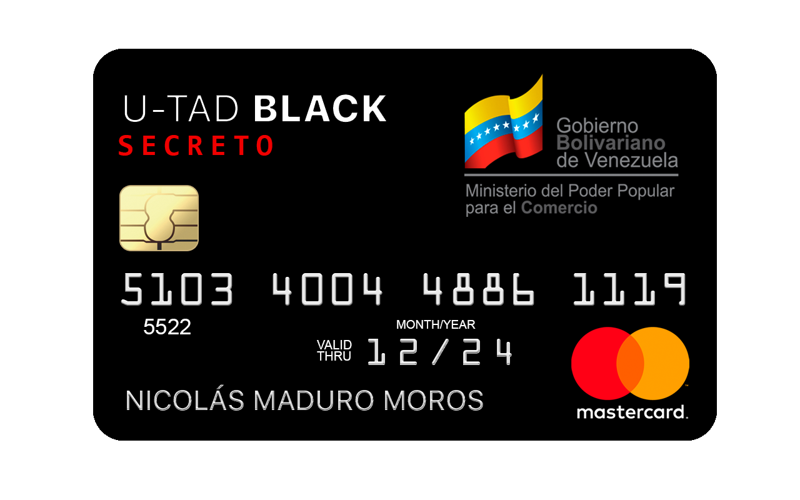
Gobierno Venezolano Card
Venezuela es un país de la costa norte de Sudamérica con numerosos atractivos naturales. A lo largo de su costa caribeña hay islas tropicales turísticas como la isla de Margarita y el archipiélago de Los Roques. Al noroeste se encuentran los Andes y la ciudad colonial de Mérida, que sirve de base para visitar el Parque Natural de Sierra Nevada. La capital, Caracas, está en el norte.
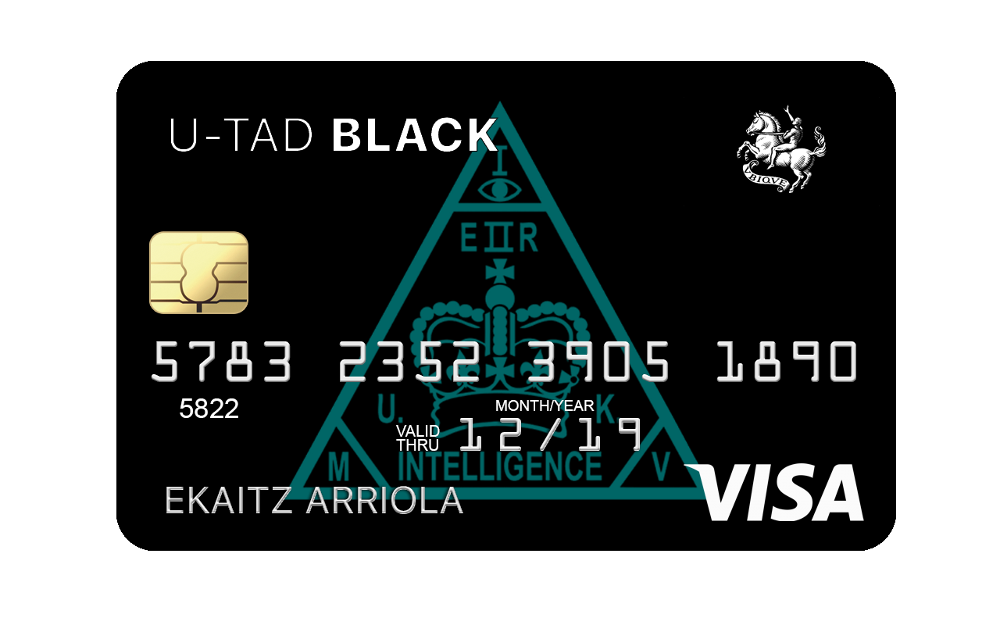
MI5 Card
El Servicio de Seguridad, más conocido como MI5, es un servicio de inteligencia del Reino Unido que principalmente se dedica a la seguridad interna del país. Desde 1995 tiene su sede en Thames House, en Millbank, Londres.
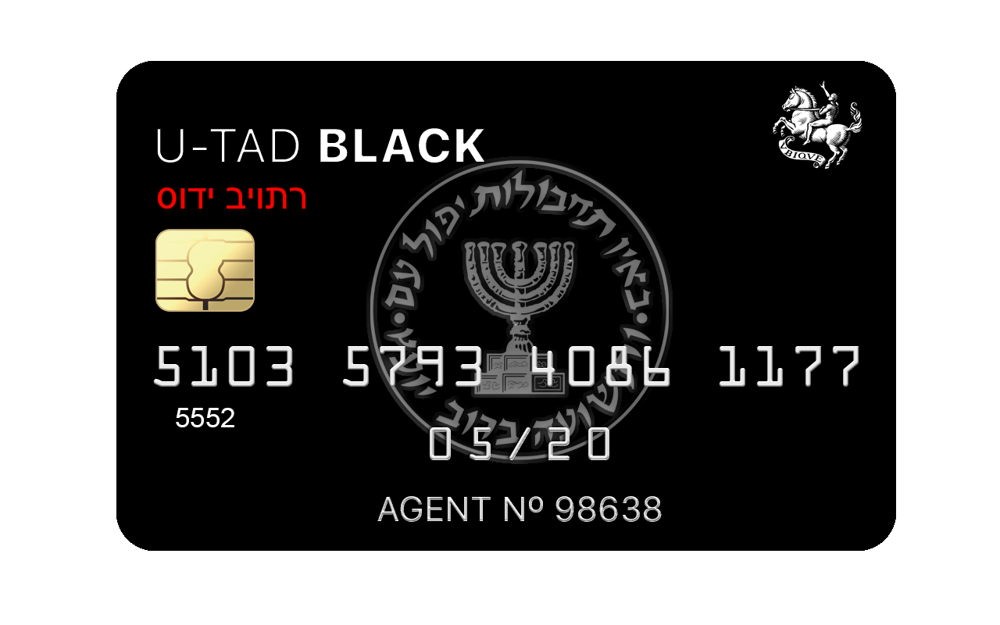
MOSSAD Card
El Mosad o Mossad es una de las agencias de inteligencia de Israel, responsable de la recopilación de información de inteligencia, acción encubierta, espionaje y contraterrorismo en todo el mundo. Está considerada entre las cinco mejores agencias de inteligencia del mundo.
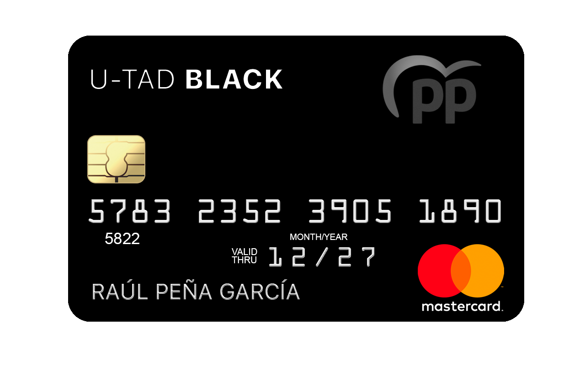
PP Card
El Partido Popular es un partido político liberal conservador español situado entre el centroderecha y la derecha política. Fue fundado en enero de 1989 para sustituir la antigua Alianza Popular.
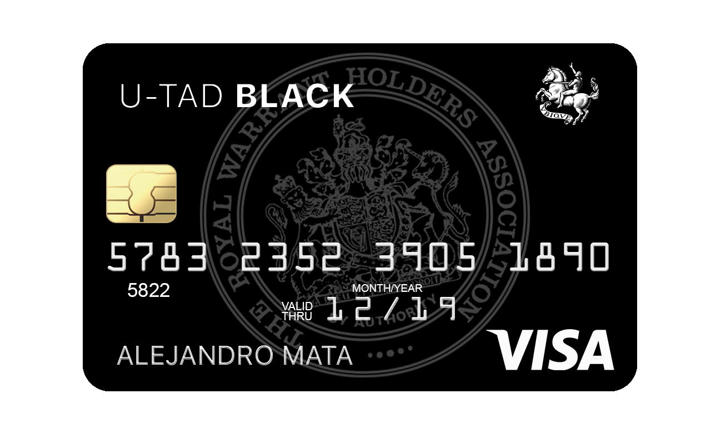
Royal Warrant Card
Una royal warrant of appointment es una autorización real como proveedor de la Casa Real Británica concedida por la Monarca del Reino Unido, el Príncipe de Gales o el Duque de Edimburgo, los tres grantors de la familia real británica, pendiente la aprobación del Lord Chamberlain.
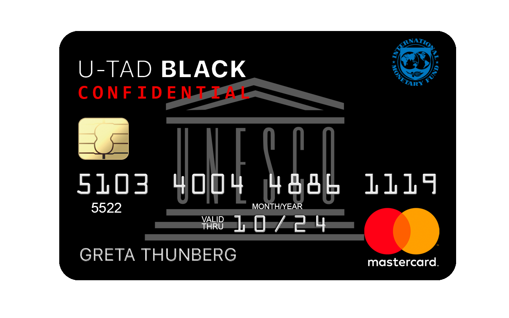
UNESCO Card
La Organización de las Naciones Unidas para la Educación, la Ciencia y la Cultura, abreviado internacionalmente como Unesco, es un organismo especializado de las Naciones Unidas.